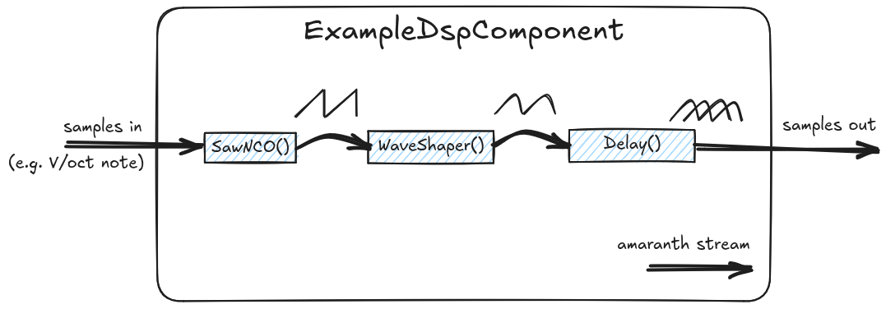

Tiliqua DSP Library
Overview
TODO short overview of the DSP library philosophy.
TODO link to Amaranth documentation on streams.
{kind=link}
Delay Lines
- class tiliqua.delay_line.DelayLine(*args, src_loc_at=0, **kwargs)
SRAM- or PSRAM-backed audio delay line.
This forms the backbone of many different types of effects - echoes, pitch shifting, chorus, feedback synthesis etc.
Usage
Each
DelayLineinstance operates in a single-writer, multiple-reader fashion - that is, for eachDelayLine, there may be only one stream of samples being written, however from eachDelayLineyou may create N instances ofDelayLineTap, which are submodules ofDelayLineused to produce output streams (read operations) on theDelayLine.For a simple, SRAM-backed delay line, the following is sufficient:
delayln = DelayLine( max_delay=8192, write_triggers_read=False, )
From this, you can create some read taps:
tap1 = delayln.add_tap() tap2 = delayln.add_tap()
The
DelayLineinstance requires a single incoming streamDelayLine.i, on which incoming samples are taken and written to the backing store.Each
DelayLineTapinstance requires both an incoming and outgoing stream,DelayLineTap.i,DelayLineTap.o, where an output sample is only produced some time after the requested delay count has arrived onDelayLineTap.i.This gives applications the flexibility to read multiple times per write sample (useful for example for fractional delay lines where we want to interpolate between two adjacent samples).
Fixed (simple) delay taps
It can be a bit cumbersome to need to provide each tap with an input stream if you just want some taps with fixed delays.
So, if you want a simple fixed delay tap, you can use the
write_triggers_read=Trueoption when creating theDelayLine. Then, you can specify explicit fixed delay taps as follows:delayln = DelayLine(max_delay=8192, write_triggers_read=True) tap1 = delayln.add_tap(fixed_delay=5000) tap2 = delayln.add_tap(fixed_delay=7000)
Note
When used in this mode,
tap1andtap2will internally have their inputs (sample request streams) hooked up to the write strobe. This means you no longer need to hook uptapX.iand will automatically get a single sample on eachtapX.oafter every write todelayln.Backing store
The backing store is a contiguous region of memory where samples are written to a wrapped incrementing index (i.e circular buffer fashion).
The same memory space is shared by all read & write operations, however the way this works is slightly different when comparing SRAM- and PSRAM- backed delay lines. In both cases, all read & write operations go through an arbiter and share the same memory bus.
- SRAM-backed delay line
The memory bus is connected directly to an FPGA DPRAM instantiation and does not need to be connected to any external memory bus.
- PSRAM-backed delay line
Due to the memory access latency of PSRAM, simply forwarding each read/write access would quickly consume memory bandwidth simply due to the access latency. So, in the PSRAM case, a small cache is inserted between the internal delay line R/W bus and the memory bus exposed by DelayLine.bus (normally hooked up to the PSRAM). The purpose of this cache is to collect as many read & write operations into burstable transactions as possible.
Note
As each delayline contains completely different samples and individually has quite a predictable access pattern, it makes sense to have one cache per
DelayLine, rather than one larger shared cache (which would likely perform worse considering area/bandwidth). The important factor is that all writes and reads on the same delayline share the same cache, as the write and read taps have the same working set.- Members:
i (
In(stream.Signature(ASQ))) – Input stream for writing samples to the delay line.bus (
Out(wishbone.Signature)) – Wishbone bus for connecting to external PSRAM (usually through an arbiter). Only present for PSRAM-backed delay lines.
- __init__(max_delay, psram_backed=False, addr_width_o=None, base=None, write_triggers_read=True, cache_kwargs=None)
- max_delayint
The maximum delay in samples. This exactly corresponds to the memory required in the backing store. Must be a power of 2.
- psram_backedbool, optional
If True, the delay line is backed by PSRAM. Otherwise, it is backed by SRAM.
- addr_width_oint, optional
Required for PSRAM-backed delay lines. The address width of the external memory bus.
- baseint, optional
Required for PSRAM-backed delay lines. The memory slice base address. This is the physical address offset in bytes.
- write_triggers_readbool, optional
If True, writing to the delay line triggers a read. This means the
DelayLineTap.istream does not need to be connected- cache_kwargsdict, optional
Relevant only for PSRAM-backed delay lines. Arguments to forward to creation of the internal memory cache.
- add_tap(fixed_delay=None)
Add and return a new
DelayLineTapto stream samples read from thisDelayLine.Note
Each tap automatically becomes a submodule of the
DelayLineinstance. That is, you only need to addDelayLineitself tom.submodules.- fixed_delayint
The
DelayLineTap.iis automatically set to a fixed delay. Only used whenwrite_triggers_read=True.
- class tiliqua.delay_line.DelayLineTap(*args, src_loc_at=0, **kwargs)
A single read tap of a parent
DelayLine. SeeDelayLinetop-level comment for information on usage.DelayLineTapshould only be created usingDelayLine.add_tap().- Members:
i (
In(unsigned(N))) – Stream of delays requested to be read from the delay line. The unit is in number of samples behind the last written sample to the delay line.o (
Out(stream.Signature(ASQ))) – Stream of samples read from the delay line, one per request onDelayLineTap.i.
Filters
- class tiliqua.dsp.SVF(*args, src_loc_at=0, **kwargs)
Oversampled Chamberlin State Variable Filter.
Filter cutoff and resonance are tunable at the system sample rate.
Highpass, lowpass, bandpass routed out on stream payloads hp, lp, bp.
Reference: Fig.3 in https://arxiv.org/pdf/2111.05592
- class tiliqua.dsp.FIR(*args, src_loc_at=0, **kwargs)
Fixed-point FIR filter that uses a single multiplier.
This filter contains some optional optimizations to act as an efficient interpolator/decimator. For details, see
stride_i,stride_obelow.- Members:
i (
In(stream.Signature(ASQ))) – Input stream for sending samples to the filter.o (
In(stream.Signature(ASQ))) – Output stream for getting samples from the filter. There is 1 output sample per input sample, presentedfilter_order+1cycles after the input sample. Forstride_o > 1, there is only 1 output sample perstride_oinput samples.
- __init__(fs, filter_cutoff_hz, filter_order, filter_type='lowpass', prescale=1, stride_i=1, stride_o=1)
- fsint
Sample rate of the filter, used for calculating FIR coefficients.
- filter_cutoff_hzint
Cutoff frequency of the filter, used for calculating FIR coefficients.
- filter_orderint
Size of the filter (number of coefficients).
- filter_typestr
Type of the filter passed to
signal.firwin-"lowpass","highpass"or so on.- prescalefloat
All taps are scaled by
prescale. This is used in cases where you are upsampling and need to preserve energy. Be careful with this, it can overflow the tap coefficients (you’ll get a warning).- stride_iint
When an FIR filter is used as an interpolator, a common pattern is to provide 1 ‘actual’ sample and pad S-1 zeroes for every S output samples needed. For any
stride > 1, thestridemust evenly dividefilter_order(i.e. no remainder). Forstride > 1, this core applies some optimizations, assuming every S’th sample is nonzero, and the rest are zero. This results in a factor S reduction in MAC ops (latency) and a factor S reduction in RAM needed for sample storage. The tap storage remains of sizefilter_orderas all taps are still mathematically required. The nonzero sample must be the first sample to arrive.- stride_oint
When an FIR filter is used as a decimator, it is common to keep only 1 sample and discard M-1 samples (if decimating by factor M). For
stride_o == M, only 1 output sample is produced per M input samples. This does not reduce LUT/RAM usage, but avoids performing MACs to produce samples that will be discarded.
- class tiliqua.dsp.Boxcar(*args, src_loc_at=0, **kwargs)
Simple Boxcar Average.
Average of previous N samples, implemented with an accumulator. Requires no multiplies, often useful for simple smoothing.
Can be used in low- or high-pass mode.
Oscillators
- class tiliqua.dsp.SawNCO(*args, src_loc_at=0, **kwargs)
Sawtooth Numerically Controlled Oscillator.
Often this can be simply routed into a LUT waveshaper for any other waveform type.
- Members:
i (
In(stream.Signature(data.StructLayout)) – Input stream, with fieldsfreq_inc(linear frequency) andphase(phase offset). One output sample is produced for each input sample.o (
Out(stream.Signature(ASQ))) – Output stream, values sweep fromASQ.min()toASQ.max().
Effects
- class tiliqua.dsp.WaveShaper(*args, src_loc_at=0, **kwargs)
Waveshaper that maps x to f(x), where the function must be stateless so we can precompute a mapping lookup table.
Linear interpolation is used between lut elements.
- class tiliqua.dsp.PitchShift(*args, src_loc_at=0, **kwargs)
Granular pitch shifter. Works by crossfading 2 separately tracked taps on a delay line. As a result, maximum grain size is the delay line ‘max_delay’ // 2.
The delay line tap itself must be hooked up to the input source from outside this component (this allows multiple shifters to share a single delay line).
VCAs
- class tiliqua.dsp.VCA(*args, src_loc_at=0, **kwargs)
Voltage Controlled Amplifier (simple multiplier).
- Members:
i (
In(stream.Signature(data.ArrayLayout(ASQ, 2)))) – 2-channel input stream.o (
Out(stream.Signature(data.ArrayLayout(ASQ, 1)))) – Output stream,i.payload[0] * i.payload[1].
- class tiliqua.dsp.GainVCA(*args, src_loc_at=0, **kwargs)
Voltage Controlled Amplifier where the gain amount can be > 1. The output is clipped to fit in a normal ASQ.
- Members:
i (
In(stream.Signature(data.StructLayout)) – 2-channel input stream, with fieldsx(audio in) andgain(multiplier that may be >1 for saturation. legal values-3 < gain < 3)o (
Out(stream.Signature(ASQ))) – Output stream,x * gainwith saturation.
Mixing
- class tiliqua.dsp.MatrixMix(*args, src_loc_at=0, **kwargs)
Matrix mixer with tunable coefficients and configurable input & output channel count. Uses a single multiplier.
Coefficients must fit inside the self.ctype declared below. Coefficients can be updated in real-time by writing them to the c stream (position o_x, i_y, value v).
Resampling
- class tiliqua.dsp.Resample(*args, src_loc_at=0, **kwargs)
Polyphase fractional resampler.
Upsamples by factor N, filters the result, then downsamples by factor M. The upsampling action zero-pads before applying the low-pass filter, so the low-pass filter coefficients are prescaled by N to preserve total energy.
The underlying FIR interpolator only performs MACs on non-padded input samples, (and for output samples which are not discarded), which can make a big difference for large upsampling/interpolating ratios, and is what makes this a polyphase resampler - time complexity per output sample proportional to O(fir_order/N).
- Members:
i (
In(stream.Signature(ASQ))) – Input stream for sending samples to the resampler at sample ratefs_in.o (
In(stream.Signature(ASQ))) – Output stream for getting samples from the resampler. Samples are produced at a rate determined byfs_in * (n_up / m_down).
- __init__(fs_in, n_up, m_down, bw=0.4, order_mult=5)
- fs_inint
Expected sample rate of incoming samples, used for calculating filter coefficients.
- n_upint
Numerator of the resampling ratio. Samples are produced at
fs_in * (n_up / m_down). Ifn_upandm_downshare a common factor, the internal resampling ratio is reduced.- m_downint
Denominator of the resampling ratio. Samples are produced at
fs_in * (n_up / m_down). Ifn_upandm_downshare a common factor, the internal resampling ratio is reduced.- bwfloat
Bandwidth (0 to 1, proportion of the nyquist frequency) of the resampling filter.
- order_multint
Filter order multiplier, determines number of taps in underlying FIR filter. The underlying tap count is determined as
order_factor*max(self.n_up, self.m_down), rounded up to the next multiple ofn_up(required for even zero padding).
One-shot
- class tiliqua.dsp.Trigger(*args, src_loc_at=0, **kwargs)
When trigger condition is met, output is set to 1, for 1 stream cycle.
Currently this only implements rising edge trigger.
- class tiliqua.dsp.Ramp(*args, src_loc_at=0, **kwargs)
If trigger strobes a 1, ramps from -1 to 1, staying at 1 until retriggered. A retrigger mid-ramp does not restart the ramp until the output has reached 1.
Stream utilities
Splitting / merging streams
- class tiliqua.dsp.Split(*args, src_loc_at=0, **kwargs)
Consumes payloads from a single stream and splits it into multiple independent streams. This component may be instantiated in 2 modes depending on the value of
replicate:- Channel splitter (
replicate == False): The incoming stream has an
data.ArrayLayoutsignature. Each payload in thedata.ArrayLayoutbecomes an independent outgoing stream.n_channelsmust match the number of payloads in thedata.ArrayLayout.
- Channel splitter (
- Channel replicater (
replicate == True): The incoming stream has a single payload. Each payload in the incoming stream is replicated and at the output appears as
n_channelsindependent streams, which produce the same values, however may be synchronized/consumed independently.
- Channel replicater (
This class is inspired by previous work in the lambdalib and LiteX projects.
- __init__(n_channels, replicate=False, source=None)
- n_channelsint
The number of independent output streams. See usage above.
- replicatebool, optional
See usage above.
- sourcestream, optional
Optional incoming stream to pass through to
wiring.connecton elaboration. This argument means you do not have to hook upself.iand can make some pipelines a little easier to read.
- wire_ready(m, channels)
Set out channels as permanently READY so they don’t block progress.
- class tiliqua.dsp.Merge(*args, src_loc_at=0, **kwargs)
Consumes payloads from multiple independent streams and merges them into a single stream.
This class is inspired by previous work in the lambdalib and LiteX projects.
- __init__(n_channels, sink=None)
- n_channelsint
The number of independent incoming streams.
- sinkstream, optional
Optional outgoing stream to pass through to
wiring.connecton elaboration. This argument means you do not have to hook upself.oand can make some pipelines a little easier to read.
- wire_valid(m, channels)
Set in channels as permanently VALID so they don’t block progress.
Connecting and remapping streams
- tiliqua.dsp.connect_remap(m, stream_o, stream_i, mapping)
Connect 2 streams, bypassing normal wiring.connect() checks that the signatures match. This allows easily remapping fields when you are trying to connect streams with different signatures.
For example, say I have a stream with an ArrayLayout payload and want to map it to a different stream with a StructLayout payload, and the underlying bit-representation of both layouts do not match, I can remap using:
dsp.connect_remap(m, vca_merge2a.o, vca0.i, lambda o, i : [ i.payload.x .eq(o.payload[0]), i.payload.gain.eq(o.payload[1] << 2) ])
This is a bit of a hack. TODO perhaps implement this as a StreamConverter such that we can still use wiring.connect?.
- tiliqua.dsp.channel_remap(m, stream_o, stream_i, mapping_o_to_i)
Connect 2 streams of type
data.ArrayLayout, with different channel counts or channel indices. For example, to connect a source with 4 channels to a sink with 2 channels, mapping 0 to 0, 1 to 1, leaving 2 and 3 unconnected:s1 = stream.Signature(data.ArrayLayout(ASQ, 4)).create() s2 = stream.Signature(data.ArrayLayout(ASQ, 2)).create() dsp.channel_remap(m, s1, s2, {0: 0, 1: 1})
This also works the other way around, to connect e.g. a source with 2 channels to a sink with 4 channels. The stream will make progress however the value of the payloads in any unmapped output channels is undefined.
Connecting streams in feedback loops
- class tiliqua.dsp.KickFeedback(*args, src_loc_at=0, **kwargs)
Inject a single dummy (garbage) sample after reset between two streams. This is necessary to break infinite blocking after reset if streams are set up in a feedback loop.
- tiliqua.dsp.connect_feedback_kick(m, o, i)
Other utilities
- tiliqua.dsp.named_submodules(m_submodules, elaboratables, override_name=None)
Normally, using constructs like:
m.submodules += delaylines
You get generated code with names like U$14 … as Amaranth’s namer doesn’t give such modules a readable name.
Instead, you can do:
named_submodules(m.submodules, delaylines)
And this helper will give each instance a name.
TODO: is there an idiomatic way of doing this?